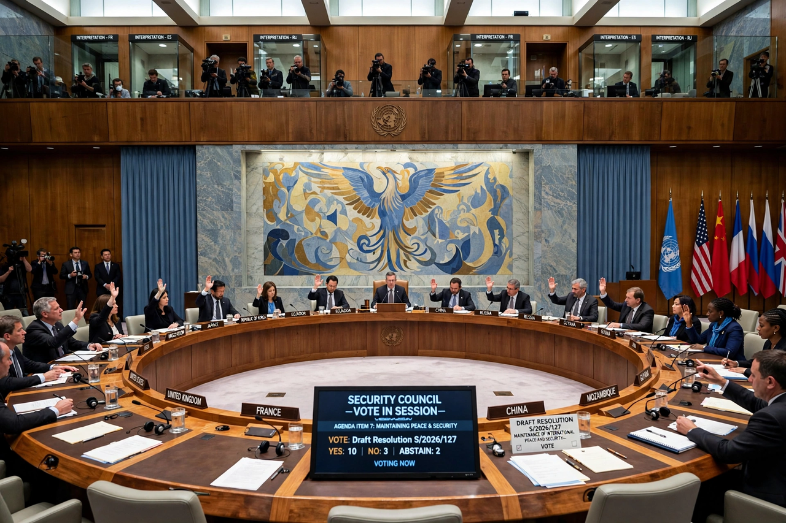

United Nations Security Council Resolution 1973, adopted on 17 March 2011, authorised member states to establish a no-fly zone over Libya and to take "all necessary measures" to protect civilians during the First Libyan Civil War. Forming the legal basis for the military intervention that helped overthrow Muammar Gaddafi, it was the first Security Council authorisation of force explicitly grounded in the "responsibility to protect" doctrine, and remains one of the most debated resolutions of the post-Cold War era.
| UN Security Council Resolution 1973 | |
| Adopted | 17 March 2011 |
|---|---|
| Vote | 10 in favour, 0 against, 5 abstentions (Brazil, China, Germany, India, Russia) |
| Sponsors | France, Lebanon, United Kingdom, United States |
| Subject | Libyan Civil War; protection of civilians; no-fly zone |
| Preceded by | Resolution 1970 (sanctions, ICC referral) |

The Security Council adopted Resolution 1973 by ten votes to none, with five abstentions.
In February 2011 the Gaddafi regime responded to protests with military force, prompting Resolution 1970, which imposed an arms embargo and sanctions and referred the situation to the International Criminal Court. As loyalist forces advanced on the rebel stronghold of Benghazi in March, threatening mass civilian casualties — Gaddafi promised to show "no mercy" — the Arab League called for a no-fly zone, and France, the United Kingdom and the United States, with Lebanon as the Arab sponsor on the Council, pressed a broader authorisation.
Acting under Chapter VII of the UN Charter, the resolution demanded an immediate ceasefire; authorised member states "to take all necessary measures … to protect civilians and civilian populated areas under threat of attack", while explicitly excluding "a foreign occupation force of any form on any part of Libyan territory"; established a ban on all flights in Libyan airspace (the no-fly zone) and authorised its enforcement; and tightened the arms embargo, asset freezes and travel bans of Resolution 1970.
Coalition air operations began on 19 March 2011 — French aircraft over Benghazi, followed by American and British strikes (Operation Odyssey Dawn) — and on 31 March NATO assumed command as Operation Unified Protector. Air power destroyed Libyan air defences, armour and command facilities and supported the advance of forces loyal to the National Transitional Council until the fall of Tripoli and the death of Gaddafi in October 2011. The Council terminated the authorisations in Resolution 2016 on 27 October, effective 31 October 2011.
The abstaining states, especially Russia and China, argued that NATO exceeded the mandate by pursuing regime change, providing close air support to one side and arming rebels. Western governments replied that protecting civilians under attack by the regime necessarily entailed defeating its offensives. The dispute is widely credited with hardening Russian and Chinese resistance to later intervention proposals, notably over Syria, and with souring the brief post-Cold War consensus behind "responsibility to protect". Compare the domestic-law debates over open-ended force authorisations such as the Authorization for Use of Military Force of 2001.